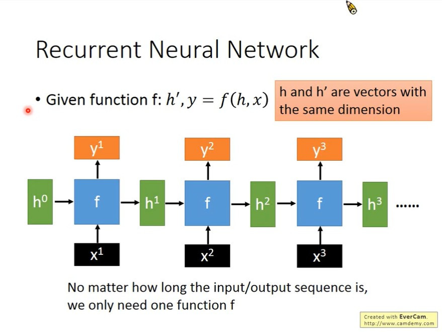
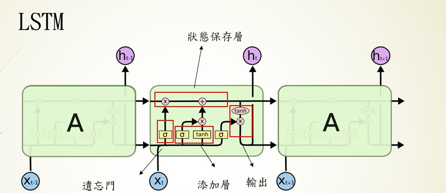
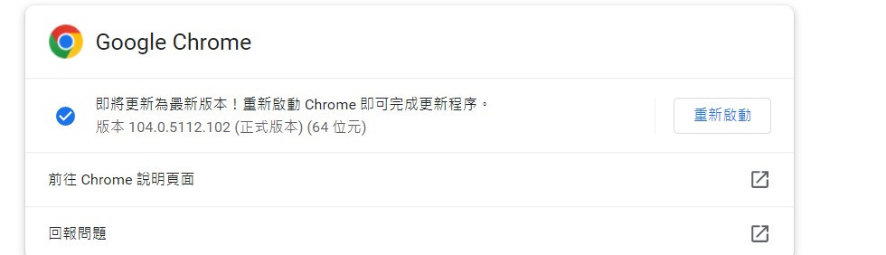
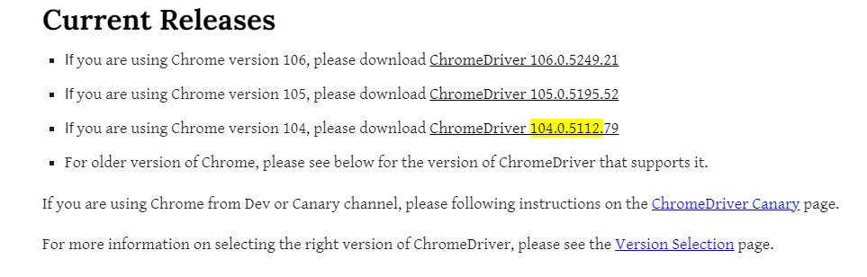
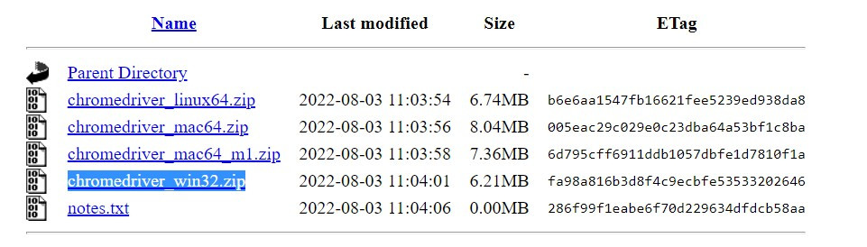
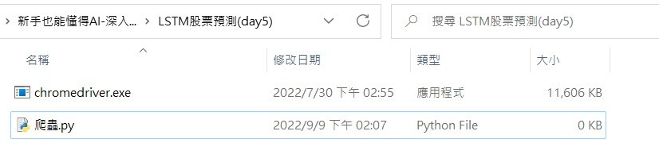
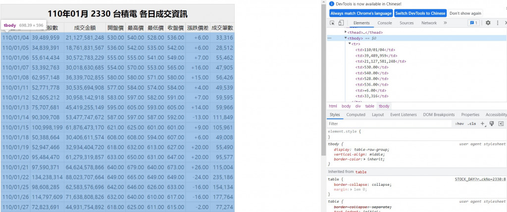

【day5】爬蟲與股票預測-長短期記憶模型(Long short-term memory) (上)
發布日期: 2022-09-09 22:15:45
原文連結: https://ithelp.ithome.com.tw/articles/10288835
遞迴神經網路（Recurrent Neural Networks）
在開始說明LSTM前，我們要先了解一下什麼是RNN架構。

圖片來源:李弘毅老師的youtube影片
先說明圖片中的一些重要參數，X1~Xn是我們帶有時間順序的輸入，像是股票的走勢、天氣的溫度、文本的文字，都是帶有時間的數據。H0~Hn是經過RNN計算過後保留下來的資料，初始狀態(H0)這一個狀態可以是0(未經過訓練)，經過每一個輸入(X與上個節點的H)就會更改H的數值並與下一個節點進行運算，使程式有將資訊傳遞的效果。而Y1~Y8是將每一節點的輸出單獨取出的結果，並不會與下個節點計算。
舉一個例子來說:
假設一周的天氣數據是[X1,X2,X3,X4,X5,X6,X7]，我們要讓RNN的神經網路預測第8天的數據，那在RNN的過程就會像是這個樣子第一節點輸入(H0,X1)->第一節點輸出(Y1,H1)->第二節點輸入(H1,X2)->第二節點輸出(Y2,H2)...第8節點輸出(Y8,H8)。
通過H傳遞每一節點的資料，使神經網路能夠了解前幾個節點的資料，從而資料帶有時間序而最終訓練的結果也就是我們的Hn狀態，此時狀態會與Yn相同，因為Y跟H是相同的，差別在於是否會進入到下個節點進行運算。
長短期記憶模型(Long Short-Term Memory)
LSTM是我們剛剛講解到的RNN模型的改良版，因為RNN模型有一個重大的缺點，就在於他是短期記憶（Short Term）我們可以看到，每節點的輸出是會被作為輸入不斷的被計算的，也就意味著會被不斷的稀釋，大概經過3~4節點最開始的輸入就被稀釋光了，LSTM則改良了這個問題。

我們把LSTM拆解為4個區塊:
狀態保存層(Cell State)、遺忘門層(Forget Gate Layer)、添加層、輸出層(Output Layer)。
狀態保存層(Cell State)
前面提到RNN的資料會隨著計算迅速消失，為了解決這個問題在LSTM中就將資料獨立儲存，並通過，遺忘門、添加層等運算，保留相關的資訊。
遺忘門層(Forget Gate Layer)
在這層中會對上一個節點的輸出與當前輸入的使用sigmoid計算，將上個節點的輸出資料傳送給狀態保存層，並丟棄無用的資料。簡單來說就是會忘記不重要的資料，保留重要的資料。
添加層
當然有丟棄資料的方式也要有新增資料的方法，所以我們這層的任務就是找到重要的資訊，將當前節點的輸入通過sigmoid計算，並通過tanh縮放資料權重，最後將資料傳送給狀態保存層。
輸出層(Output Layer)
這階段的作法與添加層的作法相似，也是通過sigmoid與tanh的計算取的所需要的資料，差別在於這次資料的來源是狀態保存層。
在這邊作一個簡易的統整:
狀態保存層:負責保留每個節點的資料
遺忘門層:輸入是上一個節點的輸出與當前輸入使用sigmoid計算，保留上個節點的輸出
添加層:輸入是上一個節點的輸出與當前輸入使用sigmoid與tanh計算，保留當前輸入
輸出層:輸入是狀態保存層與當前輸入使用sigmoid與tanh計算，重新計算下個節點的輸入
到這裡是不是了解LSTM中的構造了呢?但在開始LSTM之前我們來先來學一下爬蟲，準備我們LSTM所需要的資料
網路爬蟲
在python有兩個比較著名的爬蟲函式庫分別是requests與selenium，前者難度較高，所以今天會先採用selenium作為基礎教學，後續的課程中再教requests那們進入今天的正題我們先將程式分為幾個部分:
1.架構環境
2.導入函式庫與介紹
3.建立瀏覽器環境
4.迴圈取得網站資料
5.整理資料並存檔
1.架構環境
首先我們先到以下網址下載載驅動程式:
先找到自己瀏覽器的版本(這邊我就使用chrome作範例)到chrome://settings/help 查看瀏覽器版本

到我們驅動程式的網站下載對應版本(我的版本是104版本)

點進去後下載chromedriver_win32.zip(windows為例)

之後解壓縮到要寫程式的資料夾就可以了

再來我們安裝一下今天要使用到的函式庫不會的可以到我第一天的教學【day1】python&函式庫 安裝與介紹
pip install selenium
pip install bs4
pip install pandas
pip install sklearn
2.導入函式庫與介紹
from selenium import webdriver
from selenium.webdriver.chrome.options import Options
from bs4 import BeautifulSoup
from time import sleep
import pandas as pd
1.selenium:動態爬蟲
2.bs4:分析html網址
3.time:時間相關操作
4.pandas:excel相關操作
3.建立瀏覽器環境
首先我們要知道網站會防止分散式阻斷服務（DDoS），所以會阻擋請求太頻繁或是爬蟲的請求標頭（request header）所以我們需要更改selenium的user agent。
#設定user agent防止網站鎖IP
chrome_options = Options()
chrome_options.add_argument("user-agent=Mozilla/5.0 (Windows NT 10.0; Win64; x64) AppleWebKit/537.36 (KHTML, like Gecko) Chrome/104.0.0.0 Safari/537.36")
#指定驅動與導入設定
chrome = webdriver.Chrome('chromedriver',options=chrome_options)
設定好瀏覽器的環境後我們就可以開始解析網站了
4.迴圈取得網站資料
首先我們前往台灣證券交易所的網站(台積電股票為例)，但這個網站卻只有2013/10月的股票數據，所以我們需要使用迴圈幫助我們。
https://www.twse.com.tw/exchangeReport/STOCK_DAY?response=html&date=20131001&stockNo=2330
先分析一下url，可以看到兩個參數data=20131001與stockNo=2330，這兩個參數很明顯的一個是日期，另一個是股票編號，所以我們可以統整出以下格式。
https://www.twse.com.tw/exchangeReport/STOCK_DAY?response=html&date={年/月/日}&stockNo={股票編號}
之後就可以使用迴圈去請求不同頁面的數據
#range的內部參數是range(開始, 結尾, 一次加多少)
#2010~2022年
for y in range(2010,2023):
#1~12月
for m in range(1,13):
#網址格式為yyyy/mm/dd 不能少一碼所以要補0
if m <10:
#m的格式是int所以要轉成str才能作文字的相加
m = '0'+str(m)
url = f'https://www.twse.com.tw/exchangeReport/STOCK_DAY?response=html&date={y}{m}01&stockNo=2330'
接下來我們來操作程式前往網站並獲取網站資料
#前往網站
chrome.get(url)
#獲取網站資料
soup = BeautifulSoup(chrome.page_source, 'html.parser')
接下來我們到網站按下F12可以看到一html的程式碼，可以觀察到我們需要的資料都在tbody>tr這個標籤裡面。

之後就可以利用bs4所提供的CSS選擇器來找到我們要的資料節點，就可以獲取我們想要的資料
soup.select('tbody > tr')
。
5.整理資料並存檔
我們可以看到soup.select('tbody > tr')獲取到的資料長這樣子
<tr>
<td>99/01/04</td>
<td>39,511,138</td>
<td>2,557,720,928</td>
<td>65.00</td>
<td>65.00</td>
<td>64.00</td>
<td>64.90</td>
<td>+0.40</td>
<td>8,255</td>
</tr>
我們所需要的資料只有裡面的數值，所以我們先把資料轉成str就能取得一個比較乾淨的結果
print(tr.text)
----------顯示----------
99/01/19
47,541,231
2,970,283,048
63.00
63.20
62.00
62.50
-0.40
14,132
但有沒有發現這些資料自動換行了，這代表這些字串有一個叫做\n的特殊符號，在程式中\n代表換行符號的意思，所以我們要先將這些資料移除掉，並返回list讓我們更好的處理資料，在這邊我們只要使用split()就可以了
#split('需要切割的字')返回是list
td = tr.text.split('\n')
----------------顯示----------------
['', ' 99/01/29', '98,124,608', '5,948,654,037', '60.10', '61.50', '59.40', '61.50', '+1.50', '18,337', '']
接下來為了存成csv檔，所以我們先創立一個dict當作存放資料的地方
#建立我們資料要的dict
data = {'日期':[],
'成交股數':[],
'成交金額':[],
'開盤價':[],
'最高價':[],
'最低價':[],
'收盤價':[],
'漲跌價差':[],
'成交筆數':[]}
並且通過append將所有的資料加入到個別的索引
#注意td[0] 是 ''
data['日期'].append(td[1])
data['成交股數'].append(td[2])
data['成交金額'].append(td[3])
data['開盤價'].append(td[4])
data['最高價'].append(td[5])
data['最低價'].append(td[6])
data['收盤價'].append(td[7])
data['漲跌價差'].append(td[8])
data['成交筆數'].append(td[9])
就能使用pandas裡面的功能將資料存成csv啦
#dict轉成dataframe
df = pd.DataFrame(data)
#存成csv檔案
df.to_csv("data.csv")
完整程式碼(爬蟲)
from selenium import webdriver
from selenium.webdriver.chrome.options import Options
from bs4 import BeautifulSoup
from time import sleep
import pandas as pd
#設定user agent防止網站鎖IP
chrome_options = Options()
chrome_options.add_argument("user-agent=Mozilla/5.0 (Windows NT 10.0; Win64; x64) AppleWebKit/537.36 (KHTML, like Gecko) Chrome/104.0.0.0 Safari/537.36")
#指定驅動與導入參數
chrome = webdriver.Chrome('chromedriver',options=chrome_options)
#建立我們資料要的dict
data = {'日期':[],
'成交股數':[],
'成交金額':[],
'開盤價':[],
'最高價':[],
'最低價':[],
'收盤價':[],
'漲跌價差':[],
'成交筆數':[]}
#設定年月日(2010~2022)
for y in range(2010,2023):
for m in range(1,13):
#網址格式為yyyy/mm/dd 不能少一碼所以要補0
if m <10:
#m的格式是int所以要轉成str才能作文字的相加
m = '0'+str(m)
url = f'https://www.twse.com.tw/exchangeReport/STOCK_DAY?response=html&date={y}{m}01&stockNo=2330'
#前往網站
chrome.get(url)
#獲取網站資料
soup = BeautifulSoup(chrome.page_source, 'html.parser')
#透過CSS選擇器找到在tbody裡面所有的tr標籤
for tr in soup.select('tbody > tr'):
#將\n透過split()分割
td = tr.text.split('\n')
data['日期'].append(td[1])
data['成交股數'].append(td[2])
data['成交金額'].append(td[3])
data['開盤價'].append(td[4])
data['最高價'].append(td[5])
data['最低價'].append(td[6])
data['收盤價'].append(td[7])
data['漲跌價差'].append(td[8])
data['成交筆數'].append(td[9])
print(data)
#防止過度請求網站被鎖定IP
sleep(10)
#dict轉成dataframe
df = pd.DataFrame(data)
#存成csv檔案
df.to_csv("data.csv")
那今天就先到這邊好了，其實今天是想把東西全部教完的，但發現內容太多了，所以明天會接續今天的內容把LSTM實作做完，那我們明天再見。
課程中的程式碼都能從我的github專案中看到
https://github.com/AUSTIN2526/learn-AI-in-30-days